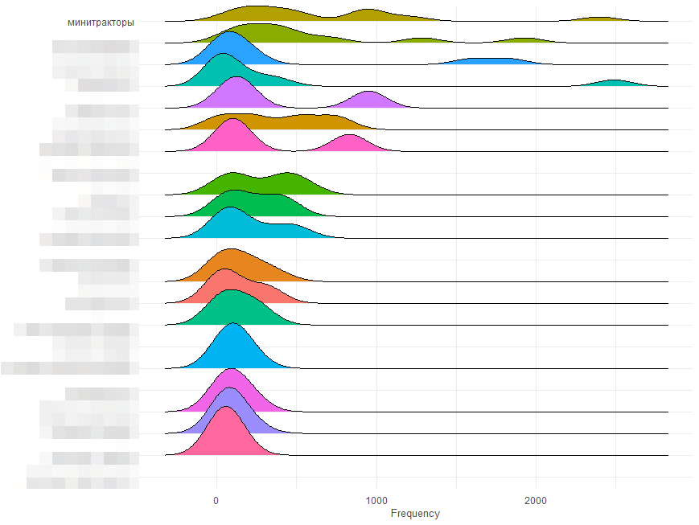
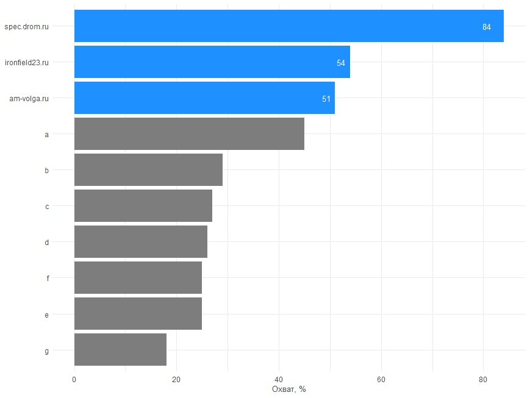
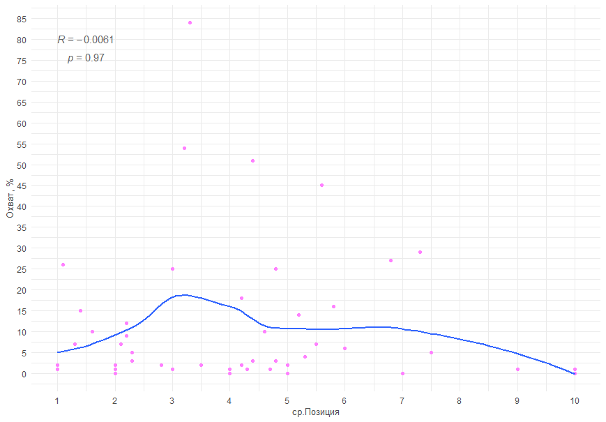
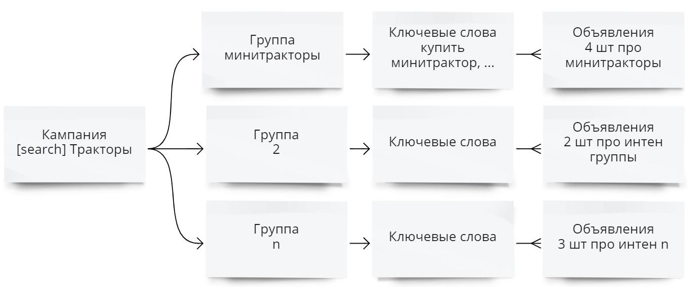
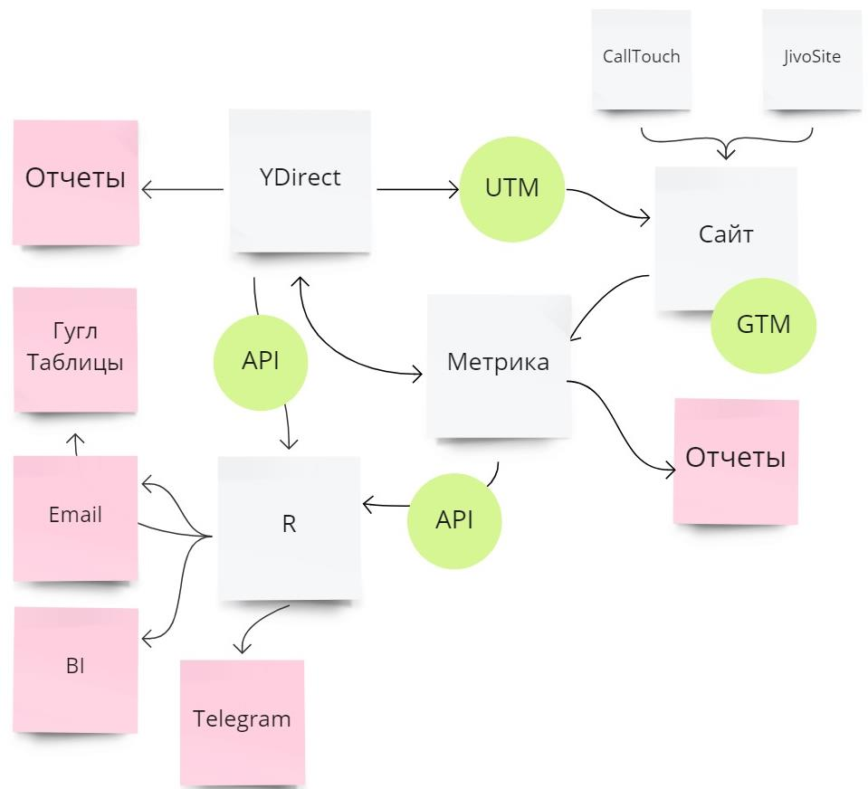

Как продавать сложные продукты в В2В в условиях кризиса с минимальным бюджетом
Раскрываем подробный разбор на примере тракторов «Беларус™»
О клиенте
Заказчик — филиал Торгового дома МТЗ-Северо-Запад г.Краснодар. Официальный дистрибьютор «Минского тракторного завода» («МТЗ») на территории Краснодарского края и Республики Адыгея. Занимаются продажами тракторов «Беларус» и сельскохозяйственной техники.

Компания поставляет продукцию фермерским хозяйствам, колхозам, агрохолдингам и другим предприятиям занимающиеся сельским хозяйством.
Задача
Получить \(N\)-е кол-во заявок из «Яндекс Директ» при минимальных бюджетах. При этом не ставились конкретные KPI по количеству обращений и стоимости. Однако были определены:
- ежемесячный бюджет;
- регионы трансляций объявлений;
- ключевые слова участвующие в таргетинге (семантическое ядро).
Что было на старте
У компании есть свой сайт, созданный нашей компанией ранее. Сайт имел чёткую структуру и подготовлен к SEO-сопровождению. Это важно, так как при запуске рекламы сервис оценивает по множеству параметров посадочную страницу и если она не качественная, рекламная компания получит меньше показов.
На сайте присутствовал счетчик «Яндекс Метрики», но требовалась дополнительная настройка целей по обращению в компанию через «JivoSite» и входящих звонков.
Проблемы проекта
Компания, после «ковидных» времен и начала «СВО» не была готова тратить большие бюджеты на привлечение клиентов из платных каналов.
Необходимо подключить CRM систему к «Яндекс Метрике» для передачи данных о качестве звонков, однако у компании «ТД МТЗ» возникли внутренние проблемы со связкой «1C™» и CRM системой. Данной интеграцией занималась сторонняя компания. В итоге до запуска проекта проблему решить не удалось и принято решение анализировать результаты кампаний на уровне обращений, а не на уровне «качественных звонков».
Так как KPI не были установлены, до запуска рекламных кампаний необходимо определить теоретическое возможное кол-во обращений в компанию, а также узнать «вилку» по бюджету, чтобы понимать хватит ли установленного бюджета.
Важно понять какое кол-во обращений возможно получить, так как от этого зависит настройка аналитики для обучения автоматических стратегий рекламных сервисов.
Подготовка
В нашей работе мы большое внимание уделяем подготовительному этапу.
Сначала необходимо провести Ситуационный Маркетинговый Анализ (СМА). СМА — это фундамент будущей стратегии привлечения клиентов. Нет фундамента — нет гарантий, что стратегия будет работать. Необходимо понимать с кем мы будем конкурировать, в каких регионах наибольшая конкуренция, какие УТП транслируют в объявлениях конкуренты. Также необходимо предсказать теоретический объём обращений и необходимый бюджет для установки KPI.
Ситуационный анализ состоит из следующих пунктов:
- анализ рынка,
- анализ семантического ядра,
- анализ конкурентов,
- предиктивная аналитика,
- аудит аналитических систем,
- анализ сайта.
Разберем каждый пункт подробнее.
Анализ рынка
Анализ рынка состоял из следующих пунктов:
- анализ семантического ядра,
- анализ конкурентов,
- предиктивная аналитика.
Анализ семантического ядра
Анализ семантического ядра дает понимание о том, какое кол-во ключевых слов имеют показы в рекламных системах. Приблизительные бюджеты на основе данных рекламных сервисов, а также предсказать возможный объем обращений в компанию.
Общая структура ядра
Для рекламной компании по тракторам собрали \(239\) ключевых слов. Ключевые слова отбирались по частотностям из сервиса «Яндекс подбор слов», но это не означает, что у всех ключевых слов из нашего списка будут показы в «ЯДирект». Поэтому необходимо собрать статистику по показам и стоимости клика из «ЯДирект». В итоге получили таблицу для дальнейшего анализа. Ниже показаны первые пять строк исходной таблицы.
Таблица: пример семантического ядра
| Фраза | Группа | Показы год | Цена клика |
|---|---|---|---|
| мтз цена | стоимость мтз | 18271 | 19.9 |
| минитрактор купить краснодарский | минитракторы | 7877 | 42.3 |
| купить минитрактор +в краснодарском крае | минитракторы | 5491 | 43.6 |
Обычная таблица, однако уже на этом этапе можно получить полезную информацию. Рассмотрим общую картину по ядру.
Таблица: общая статистика по ядру
| Показы год | Показы месяц | Ср. цена клика | Мдн. цена клика | Ключи с показами | Zero |
|---|---|---|---|---|---|
| 82628 | 6886 | 39.4 | 35.5 | 131 | 108 |
Вывод
Видим различия между медианной и средней ценой клика. Это значит, что в ядре содержаться преимущественно ключевые слова ниже средней стоимости клика. Проверим предположение на графике.
График: распределение ключевых слов по стоимости клика
 Действительно видно, что большинство ключевых слов из нашего ядра сгруппированы по стоимости клика в диапазоне от 25₽ до 40₽.
Действительно видно, что большинство ключевых слов из нашего ядра сгруппированы по стоимости клика в диапазоне от 25₽ до 40₽.
Также узнали, что разброс вокруг средней цены клика \(sd\) ≈ 17₽, т. е. стоимость клика может отличаться от среднего значение в большую или меньшею сторону на указанную сумму.
Ключевые слова с нулевыми показами
Часто бывает, что в утвержденной семантике, после сбора частот в рекламном сервисе, содержатся ключевые слова с нулевыми показами. Данные слова необходимо исключить из рекламных кампаний, так как по ним не будет показов и в процессе анализа будет легче и быстрее работать.
Таблица: пример ключевых слов с нулевыми показами
| Фраза | Группа | Показы год | Цена клика |
|---|---|---|---|
| беларусь мтз | продажа тракторов беларус | 0 | 17.8 |
| беларусь трактор цена мтз | стоимость беларус | 0 | 30.0 |
| белоруссия трактор мтз | продажа тракторов беларус | 0 | 26.0 |
Распределение ключевых слов
Рассмотрим распределение частотности показов по группам, тем самым узнаем по каким группам ожидается большее кол-во обращений. Это полезно учитывать, когда у вас в рекламной кампании разные продукты. Например, кредитные карты для физ. и юр. лиц или различные виды сельхозтехники и т.п.
График ниже приведен без названия групп из-за политики NDA.
График: распределение ключевых слов по показам в разрезе групп

Вывод
Выяснили, что как минимум четыре группы имеют ключи с большим охватом. В данных группах ожидается большее число кликов, а значит именно с этих группу будут в первую очередь приходить заявки. Также ожидаем, что данные группы будут быстрее расходовать бюджет.
Такой же график можно создать для распределения по стоимости клика, тем самым узнать какие группы содержать наиболее дорогие ключевые слова и взять группы на контроль.
Конкуренты
Методология отбора конкурентов в платной выдаче «Яндекс» строится на гипотезе, что чем больше показов у домена конкурента по выбранным ключевым словам (т. е. чем больше доля охвата), тем больше трафика получает домен, а значит это наши конкуренты в сети. Это не значит, что домен может быть нашим прямым конкурентом. Прямыми конкурентами считаются компании, которые предоставляют те же услуги и продукты, что и ваша компания, в том же регионе.
Конкуренты и охват
По нашему семантическому ядру, в платной выдаче, обнаружено \(52\) сайта конкурентов. На графике представлены ТОП \(10\) конкурентов и их доля охвата (из-за NDA на графике можем показать только первых трех конкурентов).
График: сайты конкурентов и охват

Вывод
Видим, тройку лидеров по охвату, а значит это наши основные конкуренты в аукционе «ЯДиректа». Отметим, что прямой конкурент только один «am-volga.ru». Площадка «spec.drom.ru» скорее косвенный конкурент, однако, по большому счету, это не имеет значение, так как конкурировать за показы наши объявления, в основном, будут с сайтами из ТОП \(10\).
Кстати, если площадка занимается самопродвижением, то стоит взять её на заметку. Рекомендуем разместиться на ней для привлечения потенциально заинтересованных клиентов.
Рассмотрим как конкуренты распределились по группам. В таблице увидим кол-во сайтов и объявлений на каждую группу, таким образом узнаем наиболее конкурентную группу.
Так как это пример, то покажем \(3\) группы из \(23\) и средние значения.
Пример таблицы: кол-во сайтов и объявлений в разрезе групп
| Группа | Кол-во сайтов | Кол-во объявлений |
|---|---|---|
| продажа мтз | 22 | 29 |
| сельхоз трактора | 21 | 26 |
| минитракторы | 15 | 22 |
| В среднем сайтов | 14 | --- |
| В среднем объявлений | --- | 16 |
Выводы
В среднем у нас \(14\) сайтов конкурентов и \(16\) объявлений на группу. Разброс по сайтам составляет \(\pm\ 4\). Высокая конкуренция наблюдается в первых двух группах из таблицы, значит ожидается высокая стоимость клика в данных группах.
Распределение конкурентов по позициям
Проверим гипотезу есть ли зависимость по охвату от занимаемой средней позиции. Как правило, чем выше средняя позиция, тем больше трафика получает сайт.

Вывод
В данной нише гипотеза не подтвердилась. Данный вывод подтверждает значение \(p-value = 0.97\) (при норме \(p-value=0,05\), т.е. при данном значении гипотеза проходит проверку). Значит в данной нише не имеет значение, на какой позиции находится объявление.Трафик может собираться как с верхнего, так и с нижнего блока в выдачи поисковой системы «Яндекс».
Также заметим, что основная масса конкурентов получает небольшой объем трафика, по нашему семантическому ядру, что даёт нам возможность собрать более \(80\%\) трафика, а значит есть вероятность получить максимум из нашей рекламной кампании.
Анализ регионов
Рассмотрим в каких регионах транслируют объявления конкуренты.
Пример таблицы: частота использования регионов в объявлениях в разрезе конкурентов
| Домен | Регион | Частота | Коэф |
|---|---|---|---|
| spec.drom.ru | Краснодарский край | 200 | 3.8 |
| ironfield23.ru | Москва и область, Краснодарский край, Республика Адыгея, Ростовская область, Республика Крым, Северный Кавказ, Абхазия, Донецк, Луганск | 129 | 2.5 |
| am-volga.ru | Воронежская область, Нижегородская область, Пензенская область, Республика Татарстан, Самарская область, Саратовская область, Ульяновская область, Волгоградская область, Ростовская область | 121 | 2.3 |
| kat-russia.ru | Россия, Абхазия, Южная Осетия | 108 | 2.1 |
| wiweb.ru | Россия | 69 | 1.3 |
Выясним какие регионы наиболее конкуренты.
Пример таблицы: частота использования регионов в объявлениях
| Регион | Частота | Коэф |
|---|---|---|
| Россия | 506 | 0.51 |
| Краснодарский край | 421 | 0.42 |
| Ростовская область | 322 | 0.32 |
| Абхазия | 237 | 0.24 |
| Воронежская область | 193 | 0.19 |
Вывод
Введя синтетический коэффициент в соответствующем столбце можно быстро определить самый популярный регион — Россия. На втором месте Краснодарский край и Ростовская область. В данных регионах ожидается повышенная конкуренция. При создании рекламных кампаний необходимо учитывать кол-во регионов в которых планируется транслировать объявления.
Анализ объявлений конкурентов
Собрав данные по объявлениям конкурентов из поисковой выдачи мы можем провести их анализ. Узнаем какие слова используют в заголовках и текстах объявлений чаще всего. На что делают акцент. Из этих данных будет понятно как можно отстроится от конкурентов или что нужно использовать в заголовках обязательно.
Пример таблицы: анализ объявлений
| № | Слова однословные | Частота однословные | Слова биграммы | Частота биграммы |
|---|---|---|---|---|
| 1 | трактор | 23 | купить трактор | 6 |
| 2 | купить | 13 | мини трактор | 6 |
| 3 | тракторы | 13 | рынок апк | 5 |
| 4 | лизинг | 11 | трактор мтз | 5 |
| 5 | мини | 8 | агроплощадке рынок | 4 |
| 6 | кредит | 7 | runmax rmx | 3 |
| 7 | купите | 7 | выгодно трактор | 3 |
| 8 | мтз | 6 | колесные тракторы | 3 |
| 9 | runmax | 5 | купите мини | 3 |
| 10 | апк | 5 | купить новые | 3 |
В таблице указана частота однословных и двухсловных ключевых слов из объявлений конкурентов. Изучив всю таблицу сделаем выводы, на что делают упор и как составляют объявления конкуренты.
Также можем посмотреть ключевые слова в разрезе групп и сайтов конкурентов.
Пример таблицы: анализ объявлений в разрезе групп и сайтов
| Группа | Домен | Слова | Частота |
|---|---|---|---|
| продажа мтз | 1express-credit.ru | займы | 1 |
| продажа мтз | 1express-credit.ru | срочные | 1 |
| трактор в кредит | 1express-credit.ru | займы | 1 |
| трактор в кредит | 1express-credit.ru | срочные | 1 |
| где купить мтз | DboRu.ru | бесплатных | 1 |
| где купить мтз | DboRu.ru | доска | 1 |
| где купить мтз | DboRu.ru | объявлений | 1 |
| продажа тракторов | DboRu.ru | бесплатных | 1 |
| продажа тракторов | DboRu.ru | доска | 1 |
| продажа тракторов | DboRu.ru | объявлений | 1 |
Анализ УТП прямых конкурентов на сайте
Провели анализ сайтов прямых конкурентов. В итоге получили следующую таблицу с данными.
Пример таблицы: анализа посадочных страниц конкурентов
| Конкурент | УТП | Преимущества | SEO desk | SEO mob | Принцип соответствия | Стоимость |
|---|---|---|---|---|---|---|
| «АгроМаркет ВОлга»УТП | 5/10 | 7/10 | 7/10 | 6/10 | 10/10 | 0/10 |
| Конкурент «N» | … | … | … | … | … | … |
| «ТД МТЗ» | 5/10 | 9/10 | 8/10 | 7/10 | NA | 5/10 |
Вывели итоговые оценки качества по всем конкурентам, что дает понимание как обстоят дела в нише.
Пример таблицы: итоги анализа посадочных страниц конкурентов
| --- | Кон 1 | Кон 2 | Кон 3 | Кон 4 | Кон 5 | Кон 6 | Кон 7 | Кон 8 | Кон 9 | Кон 10 |
|---|---|---|---|---|---|---|---|---|---|---|
| Средний балл | 4 | 4,8 | 5,6 | 4 | 3,3 | 6,2 | 7,8 | 6 | 4,8 | 7,3 |
| Сумма баллов | 24 | 24 | 28 | 20 | 20 | 37 | 39 | 30 | 29 | 44 |
| Комплектность | 100% | 83% | 83% | 83% | 100% | 100% | 83% | 83% | 100% | 100% |
| Quality Rate | 17% | 33% | 33% | 17% | 17% | 67% | 50% | 33% | 17% | 67% |
| Место "Сумма баллов" | 2 | 6 | 7 | 8 | 3 | 9 | 1 | 11 | 4 | 9 |
| Место "Комплексность" | 3 | 9 | 10 | 5 | 1 | 7 | 2 | 10 | 4 | 8 |
| Место "QR" | 2 | 2 | 3 | 5 | 2 | 4 | 1 | 6 | 2 | 4 |
| Очков за "Сумма баллов" | 91 | 55 | 45 | 36 | 82 | 27 | 100 | 9 | 67 | 11 |
| Очков за "Комплексность" | 80 | 20 | 10 | 60 | 100 | 40 | 90 | 10 | 63 | 13 |
| Очков за "Quality Rate" | 83 | 83 | 67 | 33 | 83 | 50 | 100 | 17 | 75 | 25 |
| Итого Очков | 861 | 501 | 389 | 426 | 876 | 355 | 970 | 109 | 674 | 144 |
| Место в Рейтинге | 3 | 5 | 7 | 6 | 2 | 8 | 1 | 10 | 4 | 9 |
Полученные данные используются для улучшения собственного сайта компании.
Вывод
- Собрали данные по объявления конкурентов. Сделали выводы, как и что будем писать в объявлениях.
- Данные по анализу сайтов конкурентов использовали для улучшения сайта компании.
Предиктивная аналитика
В данном разделе рассчитаем реально достижимый объем рынка (Serviceable & Obtainable Market). Нам необходимо понять примерное кол-во обращений, которое мы можем получить на уровне сформированного спроса. Это поможет установить KPI на который мы будем ориентироваться.
Примерно кол-во обращений в месяц определяется через распределение Пуассона. Вычисляется двумя методами:
- Исходя из рекламного бюджета и средней цены клика.
- Исходя из частотности показа ключевых слов и среднего \(ctr\).
Расчет исходя из бюджета
Исходя из месячного бюджета, согласно расчетам, с \(\approx 90\%\) вероятностью получим от \(27\) до \(50\) обращений в месяц, в среднем \(≈40\). При условии, что средняя цена клика CPC ≈ 39₽, а конверсия из клика в обращение \(CR≈4\%\) (данные по \(CR\) взяты из «ЯМетрики» клиента).
График: диапазон получения заявок исходя из бюджета
Расчет исходя из частотности показов и \(ctr\)
Сначала рассчитаем кол-во переходов исходя из средней частоты по ежемесячным показам. Нужно получить среднее значение по кликам.
При условии, что средний \(ctr≈10\%\), а среднее кол-во показов в месяц по утвержденным ключевым словам \(\approx 7000\). Тогда с \(≈90\%\) вероятностью получим от \(640\) до \(750\) переходов по объявлениям из поиска в месяц, в среднем \(≈700\).
График: диапазон получения кликов

Тогда с \(≈90\%\) вероятностью получим от \(15\) до \(41\) заявок в месяц, в среднем \(≈28\).
График: диапазон получения заявок

И рассчитаем вероятность получить продажи исходя из среднего значения по обращениям. По данным исследования Roistat средняя конверсия из обращения в продажу в В2В \(≈17\%\), тогда с \(≈90\%\) вероятностью получим от \(1\) до \(10\) продаж в месяц, в среднем \(≈5\).
График: диапазон получения продаж

Вывод
Главный вывод — возможно получить продажи с семантического ядра.
Сформируем «вилку» бюджета. Расчет произведем исходя из частотности показов и среднего \(ctr\).
| 90% вероятность | Цена клика | Переходы | Бюджет месяц | Обращения | CPA | Клиенты | CAC |
|---|---|---|---|---|---|---|---|
| Нижняя граница | 52₽ | 640 | 33 280₽ | 15 | 2 219₽ | 1 | 33 280₽ |
| Средняя | 52₽ | 700 | 36 400₽ | 28 | 1 300₽ | 5 | 7 280₽ |
| Верхняя граница | 52₽ | 750 | 39 000₽ | 41 | 951₽ | 10 | 3 900₽ |
Теперь знаем:
- ожидаемый диапазон по бюджету без НДС,
- диапазон обращений,
- диапазон продаж.
Следует учитывать:
На цену клика влияет множество факторов от кол-ва участников в аукционе на конкретный момент до качества сайта и объявлений, регионов показа и типа устройств, плюс еще \(≈10\ 000\) параметров, которые учитывает система при проведении аукциона. Поэтому итоговый бюджет может варьироваться.
Следует понимать данные расчеты в разрезе когорт. Например, выделить когорту людей обратившихся в компании в августе. Из данной когорты люди могут конвертироваться в клиентов в течении года, однако, если рассмотреть сколько людей из августовской когорты перешли в статус клиента в течении года, то можно выделить коэффициент конверсии для данной когорты, а также итоговое кол-во клиентов их стоимость и другие метрики. Однако для таких расчетов необходима связь с CRM системой.
Аудит аналитических систем
Аудит аналитики — это подготовка и проверка систем аналитики к приему и анализу входящего трафика. Он включает в себя следующие пункты:
- анализ структуры аналитики;
- корректность установки счетчика;
- какие цели отслеживаются в «ЯМетрике»;
- какие цели отслеживаются в «ЯДирект»;
- какие сегменты настроены и применяются ли в «ЯДирект»;
- применяется ли «сквозная аналитика» (анализ по ROMI или ДДР).
Здесь не будем подробно расписывать каждый пункт. Обозначим ключевые моменты.
Решено использовать «ЯМетрику», так как источником трафика будет «Яндекс Директ».
По итогам сит анализа мы выяснили, что кол-во обращений в компанию ожидается в диапазоне от \(15\) до \(40\). Этого мало для обучения автоматических стратегий. Поэтому необходимо провести дополнительные настройки по отслеживанию микро и макроцелей.
Нет сквозной аналитики. Т. е. нет возможности передать данные из CRM системы в «ЯМетрику». Это значит, что мы не можем оптимизировать рекламные кампании на уровне «качественных обращений». «Качественные обращения» — «\(50\%\)-ные** клиенты» или «квалифицированные клиенты» соответствующие критерию «четырех П» или технология «BANT». По другому потенциальные клиенты, готовые выслушать условия продажи продукции компании. Однако, по итогам проведенной рекламной кампании, мы нашли способ проверить на сколько качественно поступает трафик из РК. Об этом расскажем в отдельном кейсе.
Аудит сайта
Главная задача — проверить готовность сайта к приему трафика по следующим параметрам:
- SEO оптимизация сайта:
- техническая оптимизация,
- юзабилити,
- коммерческие факторы.
Полученные данные сравнили с таблицей качества по конкурентам. Внесли необходимые исправления на сайт.
Реализация
В этой части расскажем как проходила реализации на основе проведенного ситуационного анализа.
Тезисы и гипотеза
Из ситуационного анализа сформулируем ряд тезисов:
- Указанный заказчиком бюджет попадает в «вилку» по бюджетам рассчитанный нами. Значит мы можем запускать рекламные кампании.
- Подобранное нами семантическое ядро имеет возможность привести клиентов на уровне сформированного спроса.
- После группировки ключевых слов у нас имеется ряд групп, которые будут приводить клиентов в первую очередь:
- минитракторы,
- группа А,
- группа В …
- Имеем дело с сильной конкуренцией, особенно учитывая рекламный бюджет. Поэтому необходимо правильно выбрать регионы и уделить особое внимание составлению объявлений.
- Учитывая прогнозы по достижению целей по обращениям необходимо провести ряд настроек в системах аналитики для обучения автоматических стратегий в рекламных системах.
- На сайте необходимо провести ряд работ для улучшений параметров, которые помогут участвовать в аукционе на более выгодных условиях.
Гипотеза в нашем случае очень проста. Если подходить с точки зрения статистики, то нулевая и альтернативная гипотезы звучат так:
\(H_0\) — рекламная система «ЯДирект» не сможет генерировать обращения, а те которые будут это случайность
\(A\) — рекламная система стабильно генерирует обращения и работает со стабильной мощностью.
Структура рекламных кампаний
При составлении структуры ориентировались на следующие параметры:
Необходимо собирать как можно больше данных по макро и микроцелям для обучения автоматических стратегий. Поэтому дробить семантику на мелкие рекламные кампании нельзя.
Имеем ограниченный бюджет, поэтому работаем с ограниченным числом ключевых слов. Особое внимание уделяем ключевым словам с большой частотностью.
В итоге:
- Получили одну рекламную компанию состоящую из \(23\) групп.
- Ключевые слова сгруппированы по смыслу.
- Кол-во ключевых слов в группе варьируется от \(2\) до \(22\).
- В каждой группе от \(2\) до \(4\) объявлений в зависимости от суммарной частотности ключевых слов в группе. Чем больше в группе объявлений, тем больше времени нужно для набора стат информации, чтобы определить лучшее объявление.

Реализация аналитики
В данном проекте схема аналитики выглядит следующим образом:

Главная задача это учесть все источники обращения в компанию.
Все данные с сайта и сторонних сервисов собираются в «Метрике». «Метрика» и «ЯДирект» обмениваются данными. По API данные из «Метрики» и «Директа» передаются в RStudio, где мы проводим основную аналитику эффективности нашей стратегии.
RStidio обладает широким функционалом по предоставлению отчетов. Отчеты можно передавать в Гугл таблицы, отсылать по email или Telegram™. Или передавать данные в различные BI системы построения отчетов. Также можно настроить отчеты на собственных серверах.
В «Метрике» настроили цели:
- обращение с форм на сайте;
- отправка или копирование email компании;
- отслеживание входящих звонков;
- обращение через виджет;
- плюс настроены ряд микро целей.
Как мы уже знаем, данные по микроцелям собираются быстрее и их значительно больше. Проведя корреляционный анализ совместно с многофакторным дисперсионным анализом (ANOVA) можно определить какие микроцели предшествуют достижению макроцели. Таким образом настроив «ЯДирект» на получение микроцелей обучим систему, которая по итогу будет приводить макроцели.
В наших рекламных кампаниях мы стараемся использовать автоматические стратегии, так как они показывают наилучший результат по сравнению с ручными стратегиями. Дело в том, что в авто режиме система учитывает десятки тысяч факторов, а специалист физически не способен учесть такое кол-во факторов при управлении кампаниями в ручном режиме.
Сложности при реализации
После сбора данных провели ряд анализов, которые должны были определить предшествующие макроцелям микроцели. Однако столкнулись с проблемой. По итогам анализа ни одна макроцель не коррелировала с микроцелью. Тогда мы решили создать специальную цель в которой будут собираться данные со всех источников обращений. И такой шаг в итоге показал свою эффективность.
Также в процессе реализации проекта были месяцы в которых, по разным причинам, не собирались данные с некоторых источников обращения в компанию, что повлияло на общее кол-во достижений целей в статистике.
Итоги
Рассмотрим итоги нашей работы.
График: обзор обращений за весь период
 На графике сразу видем что в августе и сентябре у нас были проблемы со сбором данных по обращению. Некоторые каналы обращений не отслеживались по разным причинам. В октябре снова наладили аналитику.
На графике сразу видем что в августе и сентябре у нас были проблемы со сбором данных по обращению. Некоторые каналы обращений не отслеживались по разным причинам. В октябре снова наладили аналитику.
Рассмотрим плотность распределения обращений.
График: плотность распределения обращений в компанию

Видим, что рекламные кампании чаще не получали заявок. Это ожидаемо, так как учитывая специфику товара не стоит ожидать обращений в компанию каждый день. Больше всего получали по одному обращению в день. Реже по \(2-3\) обращения. Вполне ожидаемое \(F\)-распределение заявок в данной нише.
Рассмотрим кол-во заявок по месяцам.
График: кол-во обращений по месяцам

Обратим внимание, что наши расчеты по кол-ву обращений в месяц входят в рассчитанный диапазон, кроме неактивных месяцев. В среднем мы получали \(30\) заявок в месяц. Наш прогноз от \(15\) до \(41\) заявки в месяц.
График: обращение лидов с накоплением

На этом графике можно быстро определить в какие месяцы было больше или меньше всего обращений.
Как итог наша система привлечения трафика построенная на основе ситуационного анализа работает. Заявки с рекламной кампании на поиске поступали стабильно и они не были случайны. Таким образом принимаем альтернативную гипотезу сформированную ранее.
Далее проведем анализ нашей системы привлечения трафика с точки зрения шести сигм.
Шесть сигм
Каждый источник трафика генерирует обращения в определенных границах. Границы называют «границей шести сигм». Они рассчитываются с помощью «ГОСТ стандарта контрольных карт Шухарта» и набранных статистически значимых показателей (продажи, обращения, регистрации, клики и т. п.).
Зная границы шести сигм:
- знаем мощность источника трафика т.е. в каких границах мы можем ожидать ежедневных продажи / регистрации и так далее;
- знаем на сколько хорошо контролируем систему;
- становиться ясно какие KPI должны быть выставлены трафик менеджерам и менеджерам по продажам;
- на основе данных строим предиктивную аналитику для отслеживания тренда, что позволяет вовремя вносить изменения в рекламные кампании.
Не будем подробно описывать методологию расчетов, об этом напишем в отдельном кейсе. Сразу рассмотрим график и сделаем выводы.

На графике красной пунктирной линией обозначены верхняя и нижняя контрольные границы. Они показывают диапазон в котором работает наша система привлечения обращений. В нашем случаи диапазон от \(0\) до \(4\) обращений в день. По другому это мощность нашей системы. Мы не знаем хорошо это или плохо, но так работает наша система. Не стоит переживать, если в какие-то дни мы не получаем заявки. Для данной системы привлечения трафика это норма.
Однако, стоит обращать внимание на дни когда кол-во заявок выходит за пределы верхних границ. Такие дни нужно анализировать и стараться масштабировать. В нашем случаи такие выходы были сразу после запуска компании. Скорее всего проводились доп тесты по отправке заявок с сайта разработчиками сайта. Также замечены выходы за пределы в мае и в конце года. Как сообщил наш клиент в конце года всегда идёт ажиотаж и это норма.
Данный анализ особенно хорош для компаний у которых заявки в основном приходят в физических точках продаж: общепит, недвижимость, авто и другие ниши.
Что дальше
Так как у нас проблема с определением качества заявок, следующий шаг разработать метод определения качества заявок без связки с CRM системой. Метод основывается на текстовом анализе входящих звонков, обращений через виджеты и заявок с сайтов.
На этом все. Благодарим за внимание!
Хотите запуск рекламных кампаний по нашей системе? Пишите на email: i@akorshakov.ru